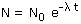
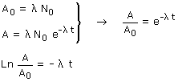
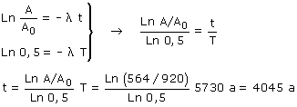

|
Conviene recordar en que se basa la datación con C-14 Cuando el árbol murió, 1 g de carbono de sus tejidos contenía N0 átomos de carbono C-14, la misma cantidad que contiene hoy 1 g de C de tejido vegetal. La actividad correspondiente es:
Al cabo de un tiempo t (Tiempo transcurrido hasta hoy), en 1 g de carbono de tejido quedan N átomos de C-14. La actividad correspondiente será:
Ecuación de desintegración:  Combinando las tres expresiones resulta un sistema de ecuaciones:  Relación entre constante de desintegración y período de semidesintegración: Combinando las dos expresiones resulta otro sistema de ecuaciones:  El árbol murió hace 4045 años |